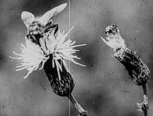

Minute Bodies – The Intimate World
of F. Percy Smith

Stuart A. StaplesGB 2016 – 16mm auf HD
60 min
B: Stuart A. Staples – DOP: F. Percy Smith – E: David Reeve
M: Tindersticks – D: BFI
Mould spreads like
a firework. A bee suckles at a sweet pea bloom like a baby on a
breast. Runner bean shoots sway and twirl as gracefully as
dancers. It is difficult to put into words the alien strangeness
of the microscopic worlds depicted by the pioneering filmmaker F.
Percy Smith. Self-taught and working before and after the first
world
war, Smith mastered early microscopic, time-lapse and underwater
photography with contraptions he fashioned from Meccano,
candlewicks and gramophone needles. Stuart Staples, the lead
singer and creative force behind the indie band Tindersticks, was
so entranced by Smith’s work that he made a film. MINUTE BODIES is
a beautiful,
hypnotic melange of the amazing footage Smith captured at his
suburban home on the edge of London. Rather than interpret the
pictures with voiceover or subtitles, Staples and film editor
David Reeve have intricately matched the images with an
instrumental score, which is sometimes soothing and often
sinister. (The Guardian)
sunday 8 oct 10.30 p.m. werkstattkino
Stuart A. Staples * 1965. Staples is the lead singer of Tindersticks, an originally Nottingham-based band formed in late 1991. Initially called Asphalt Ribbons, the band changed their name after Staples found a box of German matches on a beach in Greece. Between them they’ve scored five Denis films, with Tindersticks doing Nénette and Boni, Trouble Every Day and 35 Shots of Rum, while Hinchliffe scored Vendredi Soir and Staples did The Intruder.
F. Percy Smith (1880–1945) * in London in 1880. He was keen to exploit the educational possibilities of film, but employment at the Board of Education offered little opportunity, and he began working for the film entrepreneur Charles Urban, who had been impressed with his photograph of a bluebottle's tongue. During the First World War, Smith made a series of films depicting battles through animated maps and worked as a Naval photographer. When the war was over he turned to comedy with The Bedtime Stories of Archie the Ant (1925), featuring insect characters in a natural environment, but his real love was the 'Secrets of Nature' series he made for British Instructional Films. Beginning in 1922, the series continued into the '30s, when it became 'Secrets of Life', and thrived until Smith's death in 1945. Technological changes such as the coming of sound were easily absorbed - commentary worked equally well as inter-titles or spoken words and Smith's films fascinated successive generations just as David Attenborough's wildlife documentaries have on television.
Smith was a true pioneer, inventing original (and bizarre) methods for time lapse and micro cinematography, involving all kinds of home-made devices, including alarms all over his home to wake him up in the middle of the night if the film in the camera needed changing. With endless patience, he could spend up to two and a half years to complete a film. He also had the popular touch, with the happy knack (as he put it himself) of being able to feed his audience "the powder of instruction in the jam of entertainment". Modern film technique could hardly better the results achieved by Smith in the first decades of the century and his early masterpiece Birth of a Flower (1910) has never been out of distribution. In the '30s Smith tended to rely on his colleagues, Mary Field and H.R Hewer, to direct, while he concentrated on his painstaking photography. He died at his home in Southgate, North London, on 24 March 1945.
Films To Demonstrate How Spiders Fly 1909 – The Acrobatic Fly 1910 – The Birth of a Flower 1910 Fight for the Dardanelles 1915 – ab 1922 Secrets of Nature Series, darunter The Bedtime Stories of Archie the Ant 1925 – The World in a Wine-Glass 1931